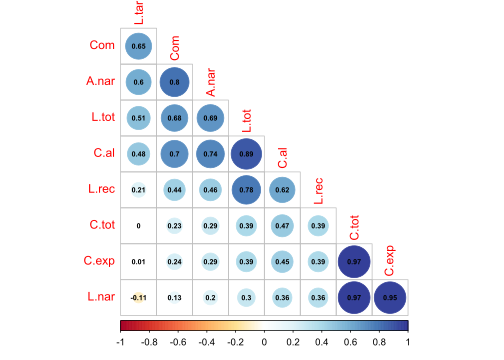
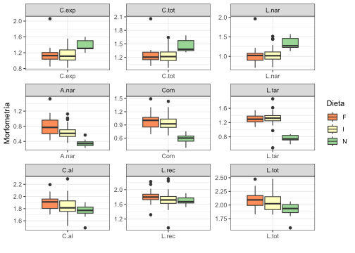
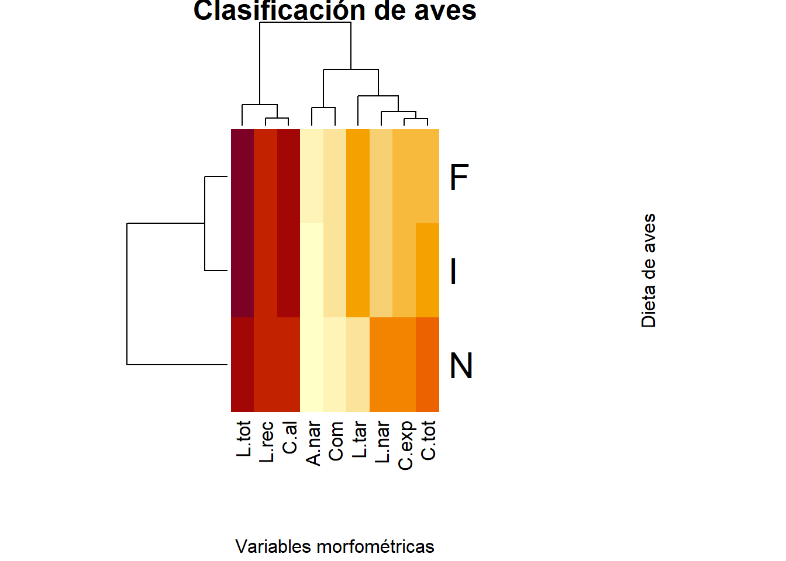
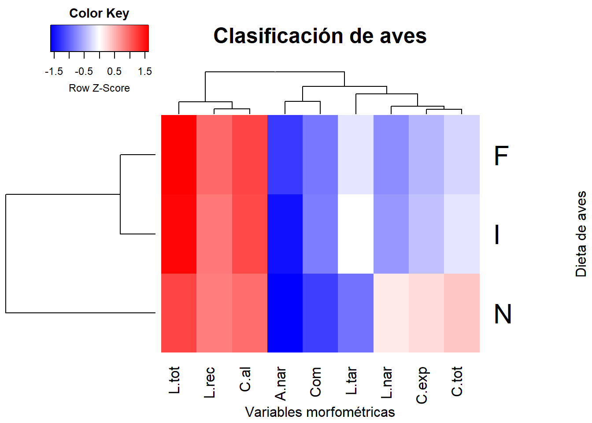
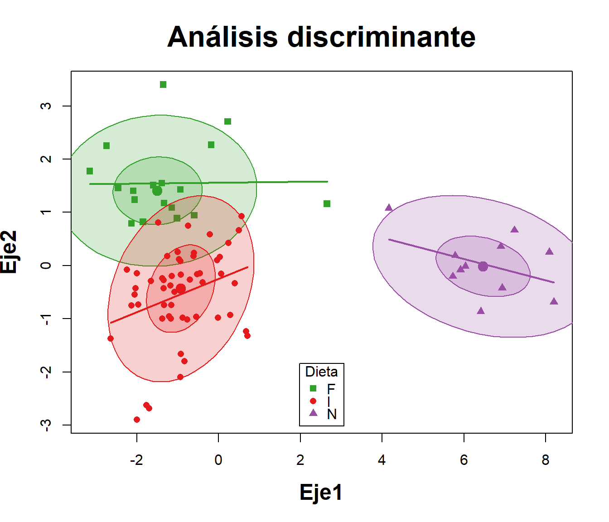

{kind=link}
# Librerías requeridas
library(tidyverse)
library(lattice)
library(corrplot)
library(ggplot2)
library(ggrepel)
library(reshape2)
library(ggforce)
library(ade4)
require(vegan)
library(car)
library(MASS)
library(candisc)
library(mvnormtest)Taller 11.2 Análisis Discriminante Lineal - LDA
Datos de morfométricos de colibríes del pacifico nariñence
Análisis Discriminante Lineal - LDA - base colibríes
Objetivo de la actividad:
La base de datos que se utilizará es la de medidas morfométricas de aves en tres tipos de dieta de aves del pacífico nariñense en Colombia (frugívoros, nectarívoros e insectívoros).

El objetivo de este ejercicio consiste en evaluar la membresía de cada individuo a su grupo asignado (tipo de dieta) y de igual forma, probar el modelo lineal realizado, para verificar la membresía o discriminar a nuevos individuos en lo que se requiere saber en qué tipo de dieta pueden clasificar. La base de datos que se utilizará es Aves.csv.
Referencias bibliográficas de apoyo.
Libro: Repositorio de archivos y del “Análisis de datos ecológicos y ambientales” - Rodríguez-Barrios Javier (2022) Ver el capítulo de este libro 7.3 Análisis discriminante LDA en donde se detallan los procedimientos descritos en el presente ejercicio.
Sigatoka en cultivos de banano - Aguirre et al. (2015). Análisis de discriminante canónico y algunas técnicas multivariadas complementarias.
Linear Discriminant Analysis in R Se brinda información sobre las generalidades de los lda y su aplicación en R.
Computing and visualizing LDA in R En este documento se brinda información sobre el análisis y la visualización gráfica del lda.
Cargar las librerías requeridas
Cargar o importar la base de datos
La presente base de datos se encuentra en formato plano de csv, presenta una columna Dieta que agrupa a las 5 dietas de aves, otra columna Grupo, que asigna un número a cada dieta y posteriormente a las 19 variables morfométricas y 10 variables meristicas, de las cuales se selecionarán las 19 morfométricas para este ejercicio M.1 a M.19.
# Base de datos
aves<-read.csv2("Aves.csv",row.names=1)
names(aves) [1] "FAMILIA" "GENERO" "ESPECIE" "Dieta"
[5] "Dieta.n" "Culmen.Expuesto" "Culmen.Total" "Largo.Narina"
[9] "Alto.Narina" "Comisura" "Longitud.Tarzo" "Cuerda.Alar"
[13] "Largo.Rectrices" "Longitud.total" # Datos sin columnas taxonómicas
aves = aves[,-5] # Eliminar la variable cualitativa "Dieta.n"
aves = aves[,4:13] # Base de aves, solo con la variables cuantitativas
# Convertir "Dieta" a factor
aves$Dieta = as.factor(aves$Dieta)
str(aves)'data.frame': 82 obs. of 10 variables:
$ Dieta : Factor w/ 3 levels "F","I","N": 1 1 1 1 1 1 1 1 1 1 ...
$ Culmen.Expuesto: num 13.4 7.1 7.8 17.5 13.5 ...
$ Culmen.Total : num 15.7 10.2 11.2 22 17.4 ...
$ Largo.Narina : num 11.4 5.1 5.7 13.9 10.8 92 16.5 10.3 14.4 7.8 ...
$ Alto.Narina : num 6.2 2.7 4.1 9.2 13.4 33.5 14.2 5.6 9.4 3.6 ...
$ Comisura : num 10.4 5.9 6.8 7.7 13.1 31.1 18.6 11.9 11.4 7.8 ...
$ Longitud.Tarzo : num 19.5 16 13 24.2 16.5 35.2 30.1 23.7 25.4 14 ...
$ Cuerda.Alar : num 79.8 50.7 58.3 86.1 120.7 ...
$ Largo.Rectrices: num 68.8 20.7 38.7 76.7 105.9 ...
$ Longitud.total : num 123.8 67.4 85.6 149.5 201.2 ...# Resumir nombres de las variables
colnames(aves) <- c("Dieta", "C.exp", "C.tot", "L.nar", "A.nar",
"Com", "L.tar", "C.al", "L.rec", "L.tot")
str(aves)'data.frame': 82 obs. of 10 variables:
$ Dieta: Factor w/ 3 levels "F","I","N": 1 1 1 1 1 1 1 1 1 1 ...
$ C.exp: num 13.4 7.1 7.8 17.5 13.5 ...
$ C.tot: num 15.7 10.2 11.2 22 17.4 ...
$ L.nar: num 11.4 5.1 5.7 13.9 10.8 92 16.5 10.3 14.4 7.8 ...
$ A.nar: num 6.2 2.7 4.1 9.2 13.4 33.5 14.2 5.6 9.4 3.6 ...
$ Com : num 10.4 5.9 6.8 7.7 13.1 31.1 18.6 11.9 11.4 7.8 ...
$ L.tar: num 19.5 16 13 24.2 16.5 35.2 30.1 23.7 25.4 14 ...
$ C.al : num 79.8 50.7 58.3 86.1 120.7 ...
$ L.rec: num 68.8 20.7 38.7 76.7 105.9 ...
$ L.tot: num 123.8 67.4 85.6 149.5 201.2 ...# Datos por cada grupo o tipo de dieta
summary(aves[,1]) F I N
22 49 11 # Transformación logaritmica de "aves"
aves1 = log10(aves[,2:10])
aves = data.frame(Dieta=aves$Dieta, aves1)
str(aves)'data.frame': 82 obs. of 10 variables:
$ Dieta: Factor w/ 3 levels "F","I","N": 1 1 1 1 1 1 1 1 1 1 ...
$ C.exp: num 1.127 0.851 0.892 1.243 1.13 ...
$ C.tot: num 1.2 1.01 1.05 1.34 1.24 ...
$ L.nar: num 1.057 0.708 0.756 1.143 1.033 ...
$ A.nar: num 0.792 0.431 0.613 0.964 1.127 ...
$ Com : num 1.017 0.771 0.833 0.886 1.117 ...
$ L.tar: num 1.29 1.2 1.11 1.38 1.22 ...
$ C.al : num 1.9 1.71 1.77 1.94 2.08 ...
$ L.rec: num 1.84 1.32 1.59 1.88 2.02 ...
$ L.tot: num 2.09 1.83 1.93 2.17 2.3 ...
Exploración de los datos
Para este ejemplo se urtilizarán figuras que relacionan parejas de variables y figuras de cajas que permitan visualizar diferencias entre las dietas de aves de acuerdo a su morfometría. *Para facilidad del ejercicio se seleccionarán algunas variables morfométricas - aves1, debido a que son las que presentan mejores patrones lineales.
# Elipses con colores con variables morfométricas
aves1 <- aves1
M <- cor(aves1) # Matriz de Correlación (M)La Figura 1 permite visualizar las relaciones lineales entre todas las parejas de variables, incluyendo a los coeficientes de correlación de Pearson.
x11()
corrplot(M, method = "circle", # Correlaciones con circulos
type = "lower", insig="blank", # Forma del panel
order = "AOE", diag = FALSE, # Ordenar por nivel de correlación
addCoef.col ="black", # Color de los coeficientes
number.cex = 0.6, # Tamaño del texto
col = COL2("RdYlBu", 200)) # Transparencia de los circulos
La Figura 2 a diferencia de la anterior, clasifica a los grupos por colores y además incluye a sus coeficientes de correlación y el patrón de distribución de cada variable mediante histogramas de densidad.
x11()
pairs ((aves1),panel=function(x,y)
{abline(lsfit(x,y)$coef,lwd=1,col=3)
lines(lowess(x,y),lty=2,lwd=1,col=2)
points(x,y,col=aves$Dieta, cex=1.4,pch=19,lwd=0.3)})
La Figura 3 permite visualizar la resolución de cada variable para diferenciar o discriminar a las diferentes dietas de aves. Esta figura sirve de insumo para descartar aquellas variables con poco potencial de discriminación de las dietas.
# Figuras multivariadas de Cajas y bigotes
library(reshape)
x11()
ggplot(melt(aves[,c(1,2:10)]), aes(x=variable, y=value)) +
geom_boxplot(aes(fill=Dieta)) +
scale_fill_manual(values = c('#fc8d59','#ffffbf','#99d594','#377eb8','#33a02c')) +
labs(x="",y="Morfometría") +
facet_wrap(~ variable,scales="free") +
theme_bw()
Mapa de Calor
El siguiente mapa de calor también permite visualizar a la resolución de las variables morfométricas para diferenciar a las dietas de aves, las cuales representan a los grupos en comparación. Con los siguientes comandos se calculará una tabla que resume a los promedios de las 10 variables morfométricas para cada dieta evaluada.
# Extracción de los promedios de las variables para cada Dieta
library(tidyverse)
promedios <- aves %>%
subset(select = c("Dieta","C.exp","C.tot","L.nar","A.nar","Com","L.tar","C.al","L.rec","L.tot")) %>%
na.omit() %>%
group_by(Dieta) %>%
summarize(across(everything(), mean))
promedios <- data.frame(promedios) # Guardar promedios como dataframe
# promediosA continuación se comvierte el dataframe a formato matricial - promedios2, para poder ser graficado en el mapa de calor.
# Seleccionar columnas de 2 a 10 del data frame aves1 y convertirlas en matriz
promedios2 <- promedios %>%
subset(select = c(2:10)) %>%
as.matrix()
round(promedios2,2) C.exp C.tot L.nar A.nar Com L.tar C.al L.rec L.tot
1 1.16 1.25 1.04 0.81 0.99 1.30 1.90 1.81 2.11
2 1.15 1.24 1.03 0.64 0.95 1.32 1.85 1.72 2.05
3 1.37 1.45 1.33 0.35 0.58 0.76 1.76 1.71 1.91Ahora se incluyen los nombres de las dietas a la matriz promedios2.
# Asignar los valores de la primera columna de aves1 como nombres de fila en la matriz aves2
rownames(promedios2) <- promedios[,1]La Figura 4 permite visualizar a las variables que mejor discriminan a las dietas de aves (variables de tonalidad rojiza).
# Figura del primer mapa de calor
x11()
hv <- heatmap(promedios2,
margins=c(8,12),
distfun = dist,
xlab ="Variables morfométricas",
ylab= "Dieta de aves",
main = "Clasificación de aves") 
La Figura 5 incorpora elementos adicionales como al método de agrupamiento upgma, asumiendo que puede ser el que mejor se ajusta a los datos de este ejercicio.
# Opción 2. Mapa de calor con paquete "stats"
hclust.fq <- function(promedios2)
hclust(promedios2, method="average") # Inserción de UPGMAlibrary("gplots")
x11()
heatmap.2(promedios2, # Base de datos en formato matricial
margins=c(5,8), # Margenes de la figura
scale = "row", # Estandariza variables diferentes.
col = bluered(100), # Colores del mapa de calor
xlab ="Variables morfométricas",
ylab= "Dieta de aves",
main = "Clasificación de aves",
trace = "none",
density.info = "none",
distfun = dist, # Se puede usar vegdist de "vegan"
hclustfun=hclust.fq) # Agrupamiento UPGMA
Tres pasos para la realización del discriminante lineal - LDA
Paso 1. Pruebas de supuestos
Para que el análisis discriminante lineal sea considerado como un modelo lineal, debe cumplir con los supuestos de normalidad multivariada y de homogeneidad de covarianzas. Para el caso del presente ejercicio, dichos supuestos no alcanzan a cumplirse con los diagnosticos utilizados (valor p > 0.05), motivo por el cual, el lda de este ejercicio será tomado como una técnica de exploración moltivariada para saber que tan bien discriminados quedan los individuos de cada dieta, basado en las 9 variables morfométricas seleccionadas.
1.1 Supuesto de normalidad
El supuesto de normalidad multivariada será evaluado con el paquete mvnormtest, el cual utiliza el estadìstico de Shapiro Wilks Multivariado. Para ello se realizará esta prueba en cada uno de los grupos o dietas en comparación.
# Diagnóstico de normalidad por cada tipo de Dieta
library(mvnormtest)Los siguientes generan los dataframes de cada dieta con las 9 variables seleccionadas, convirtiendola además en formato matricial.
# Dataframe por cada dieta
summary(aves) Dieta C.exp C.tot L.nar A.nar
F:22 Min. :0.8195 Min. :0.9685 Min. :0.7076 Min. :0.2304
I:49 1st Qu.:1.0540 1st Qu.:1.1576 1st Qu.:0.9420 1st Qu.:0.5051
N:11 Median :1.1553 Median :1.2529 Median :1.0453 Median :0.6074
Mean :1.1816 Mean :1.2721 Mean :1.0711 Mean :0.6446
3rd Qu.:1.3010 3rd Qu.:1.3483 3rd Qu.:1.1584 3rd Qu.:0.7596
Max. :2.0577 Max. :2.0577 Max. :1.9638 Max. :1.5250
Com L.tar C.al L.rec
Min. :0.3802 Min. :0.4914 Min. :1.483 Min. :0.959
1st Qu.:0.8277 1st Qu.:1.2082 1st Qu.:1.767 1st Qu.:1.644
Median :0.8921 Median :1.2933 Median :1.816 Median :1.733
Mean :0.9110 Mean :1.2398 Mean :1.851 Mean :1.744
3rd Qu.:1.0324 3rd Qu.:1.3816 3rd Qu.:1.932 3rd Qu.:1.839
Max. :1.4928 Max. :1.8657 Max. :2.290 Max. :2.293
L.tot
Min. :1.581
1st Qu.:1.929
Median :2.024
Mean :2.046
3rd Qu.:2.155
Max. :2.480 # datos de F.
Dieta.f <- aves %>%
filter(Dieta == "F") %>%
subset(select = c("C.exp","C.tot","L.nar","A.nar","Com","L.tar","C.al","L.rec","L.tot")) %>% as.matrix()
# datos de I.
Dieta.i <- aves %>%
filter(Dieta == "I") %>%
subset(select = c("C.exp","C.tot","L.nar","A.nar","Com","L.tar","C.al","L.rec","L.tot")) %>% as.matrix()
# datos de N.
Dieta.n <- aves %>%
filter(Dieta == "N") %>%
subset(select = c("C.exp","C.tot","L.nar","A.nar","Com","L.tar","C.al","L.rec","L.tot")) %>% as.matrix() Cálculo de los diagnósticos de normalidad multivariada de cada grupo de dietas de las aves.
# Prueba de normalidad para cada Dieta
norm1 <- mshapiro.test(t(Dieta.f))
norm2 <- mshapiro.test(t(Dieta.i))
norm3 <- mshapiro.test(t(Dieta.n)) A continuación se resume el resultado de los tres diagnósticos de normalidad multivariada realizados. Vale la pena mencionar que ninguna dieta cumple con dicho supuesto estadístico (valores p < 0.05), aunque existe la posibilidad de probar con alguna transformación.
# Resumen de el diagnóstico de normalidad
round((normalidad = data.frame(Norm.Dieta.f = norm1$p.value,
Norm.Dieta.i = norm2$p.value,
Norm.Dieta.n = norm3$p.value)),12) Norm.Dieta.f Norm.Dieta.i Norm.Dieta.n
1 1.64986e-07 3e-12 2.5872e-08Tarea: Probar este diagnóstico con la base “aves1”
1.2 Supuesto de homogeneidad de covarianzas
La prueba de homogeneidad de covarianza o esfericidad, corresponde al segundo supuesto del análisis discriminante lineal, se utilizará la función betadisper, la cual es complementada por dos análisis de varianza, los cuales definirán si el supuesto logra ser cumplido.
# Pruebas de Homogeneidad de covarianzas paquete "vegan"
aves.d <- dist(aves[,c(2:10)]) # Matriz de distancias
aves.homoge <- betadisper(aves.d, aves$Dieta) # PermutestCon la siguiente anova se obtiene un valor p de 0.56*, lo cual indica que SI se cumple el supuesto de homogeneidad de covarianzas (valor p < 0.05).
# 1) Prueba con anova permutacional
anova(aves.homoge) Analysis of Variance Table
Response: Distances
Df Sum Sq Mean Sq F value Pr(>F)
Groups 2 0.0885 0.044226 0.5726 0.5664
Residuals 79 6.1012 0.077231 Con el permutest se obtiene un valor p de 0.56*, lo cual indica que SI se cumple el supuesto de homogeneidad de covarianzas (valor p < 0.05).
# 2) Prueba permutacional
permutest(aves.homoge) # Se cumple el supuesto de homogeneidad
Permutation test for homogeneity of multivariate dispersions
Permutation: free
Number of permutations: 999
Response: Distances
Df Sum Sq Mean Sq F N.Perm Pr(>F)
Groups 2 0.0885 0.044226 0.5726 999 0.58
Residuals 79 6.1012 0.077231
Paso 2. Análisis Discriminante Lineal de Fisher - LDA
A continuación, se realizará el lda, que permitirá generar definir al nivel de discriminación de cada grupo o dieta de colibríes. Se presentan algunas opciones gráficas con el procedimiento general y con el análisis discriminate canónico (dca)
# Cálculo del LDA
names(aves) [1] "Dieta" "C.exp" "C.tot" "L.nar" "A.nar" "Com" "L.tar" "C.al" "L.rec"
[10] "L.tot"dis<-lda (Dieta ~ C.exp+C.tot+L.nar+A.nar+Com+L.tar+C.al+L.rec+L.tot,
data = aves)
round(dis$prior,2) F I N
0.27 0.60 0.13 “Prior probabilities of groups” corresponde a la probabilidad de clasificación para cada grupo que dependerá del número de aves que lo conforman, aquellas dietas con mayor número de individuos censados, presentarán mayor probabilidad de discriminación.
Prbabilidad de clasificar indv. de los cinco grupos: F I N
0.27 0.60 0.13
# Insumos del AD
# summary(dis)A continuación se presentan los promedios de cada dieta por cada variable morfométrica seleccionada para el análisis.
#Grupos de medias para las 4 variables
round(dis$means,2) C.exp C.tot L.nar A.nar Com L.tar C.al L.rec L.tot
F 1.16 1.25 1.04 0.81 0.99 1.30 1.90 1.81 2.11
I 1.15 1.24 1.03 0.64 0.95 1.32 1.85 1.72 2.05
N 1.37 1.45 1.33 0.35 0.58 0.76 1.76 1.71 1.91Los autovalores son los que permiten definir las coordenadas de las variables para cada función canónica (eje o dimensión del lda), para la grafica del discriminante, se utilizarán las funciones LD1 y LD2, como ejes x y y respectivamente (ver @fi-figura6).
# Autovalores estandarizados (pesos de las variables en cada eje)
round((Cs <- dis$scaling),2) LD1 LD2
C.exp 1.11 0.31
C.tot 5.41 -0.76
L.nar 0.75 -1.33
A.nar -0.93 8.06
Com -7.20 -4.25
L.tar -5.52 -2.68
C.al 3.82 0.94
L.rec 0.46 1.96
L.tot -1.16 -1.93En el siguiente insumo se relacionan las coordenadas de las 6 primeras observaciones, las cuales también serán graficadas en la @fi-figura6.
# Coordenadas de las seis primeras observaciones en cada eje canónico
round(head(Fp <- predict(dis)$x),2) LD1 LD2
3 -1.48 0.81
13 -1.17 -1.00
14 -0.74 0.75
20 -0.18 2.27
31 -1.36 3.40
32 0.22 2.71La siguiente tabla es conocida como tabla de contingencia la cual realiza una validación cruzada entre las dietas (filas) y los grupos discriminados por el lda (columnas). De acuerdo a esta tabla F e I no discriminan a todos sus individuos en su grupo, debido a que hay individuos de estas aves que presentan una morfometría más similar a otros grupos.
# Evaluación de desempeño del AD (método 1)
attach(aves)
group<-predict(dis,method="plug-in")$class
(tabla<-table(Dieta,group)) group
Dieta F I N
F 12 10 0
I 6 43 0
N 0 0 11La siguiente tabla realiza una validación en términos porcentuales, definiendo que en los casos de F e I donde el 55% y el 88% de sus individuos discriminan correctamente en su dieta. La dieta N presenta una discriminación completa en su grupo.
# Porcentaje de clasificación correcta
round(diag(prop.table(tabla, 1)),2)*100 F I N
55 88 100 La siguiente validación realizada por el método de Jacknife, presenta menos resolución de discriminación que la anterior, por lo cual no será tenida en cuenta en este ejercicio.
# M?todo 2: con clasifiación basada en jacknife (validación cruzada dejando uno afuera)
dis.jac <- lda(Dieta ~ C.exp+C.tot+L.nar+A.nar+Com+L.tar+C.al+L.rec+L.tot,
data=aves, CV=TRUE)# Número y proporciones de clasificación correcta
clases.jac <- dis.jac$class
tabla.jac <- table(Dieta, clases.jac)
tabla.jac clases.jac
Dieta F I N
F 10 12 0
I 9 39 1
N 0 0 11# Validación cruzada
round(diag(prop.table(tabla.jac, 1)),2)*100 F I N
45 80 100
Paso 3. Visualización grafica del LDA
- ** 3.1 Gráfico de elipses.**
A continuación se realizará el componente grafico del lda, el cual inicia con una figura que definirá unas elipses, las cuales relacionan a los individuos de cada dieta y cuyo solapamiento definirá el nivel de relación entre estas.
# Escores o coordenadas de las observaciones en cada eje can?nico
Fp <- predict(dis)$x# Grupos asignados por el AD
group<-predict(dis,method="plug-in")$class# Coordenadas y grupos asignados
aves.coord=data.frame(Dieta=group,Fp)La Figura 6 demuestra que si bien de presenta una buena discriminación de las dietas de aves, 2 de las 3 evaluadas presentan cierta relación, definida por el solapamiento de sus elipses.
# Figura del LDA
attach(aves)
x11()
scatterplot(LD2~LD1 | Dieta, data=aves.coord,reg.line=FALSE,
smooth=F, spread=F,span= 1,grid=F,
legend=list(coords="bottom"),
ellipse=T,font.lab=2, pch=c(15,16,17,18,19),
col=c('#33a02c','#e41a1c','#984ea3'),
main="Análisis discriminante",
font.main=2,cex.main=2,cex.lab=1.5,
xlab="Eje1", ylab="Eje2")
- ** 3.2 Gráfico del discriminante canónico - cda**
El siguiente análisis permite visualizar la influencia de cada variable morfométrica en la separación de los grupos de dietas y selecciona a las variables que presentan más influencia en la discriminación de esos grupos.
attach(aves)
names(aves) [1] "Dieta" "C.exp" "C.tot" "L.nar" "A.nar" "Com" "L.tar" "C.al" "L.rec"
[10] "L.tot"Lo primero que se realiza es el modelo lineal mod indicando las variables y los grupos a discriminar.
# Modelo Lineal multivariado con las variables morfom?tricas de aves
mod <- lm(cbind(C.exp,C.tot,L.nar,A.nar,Com,L.tar,C.al,L.rec,L.tot) ~ Dieta, aves)# Resumen del modelo multivariado
# summary(mod)Posteriormente realiza el discriminante canónico can que permite realizar la discriminación de los grupos en los ejes canónicos.
# Análisis discriminante canónico - ADC
can <- candisc(mod, term="Dieta",data=aves,ndim=1)A continuación se presenta la figura que define a la discriminación de las dietas con un solo eje canónico el cual explica el 95% de la variación de los datos. La orientación de los vectores (variables morfométricas), en relación a las cajas, indica su importancia para discriminar a cada dieta o grupo en comparación.
x11()
plot(can,titles.1d = c("Puntuación canónica", "Estructura"))
En el siguiente enlace se puede obtener un caso aplicado con este tipo de análisis multivariados: Aguirre et al. (2015). Ver la figura 2 del manuscrito en mención.